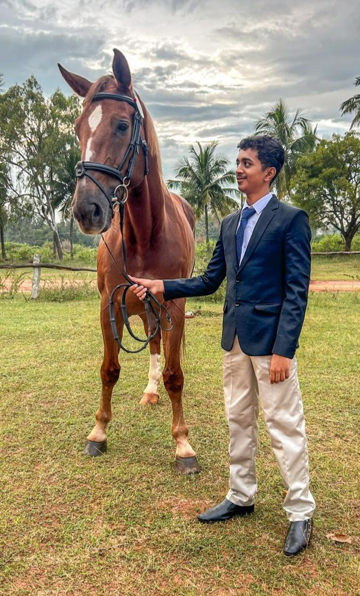
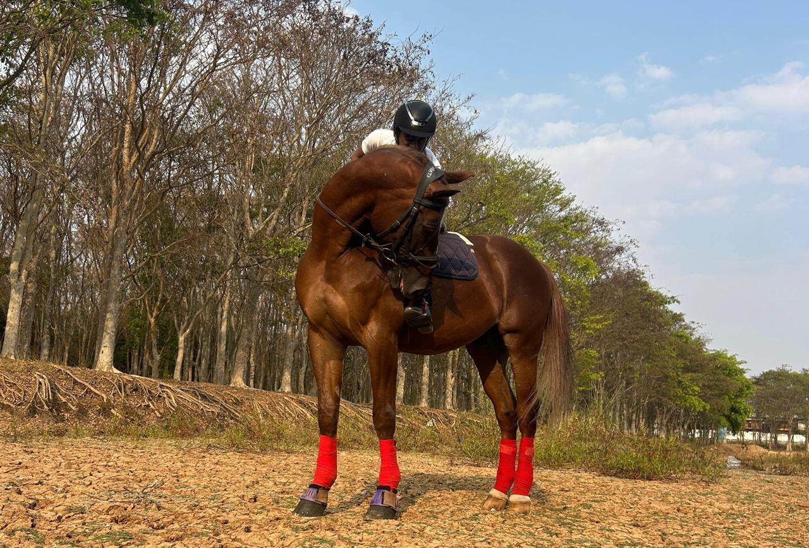
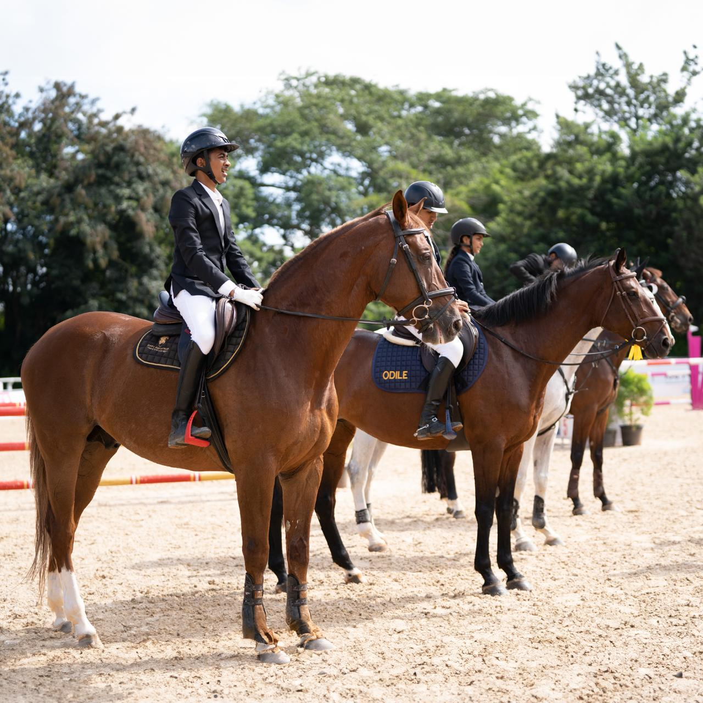
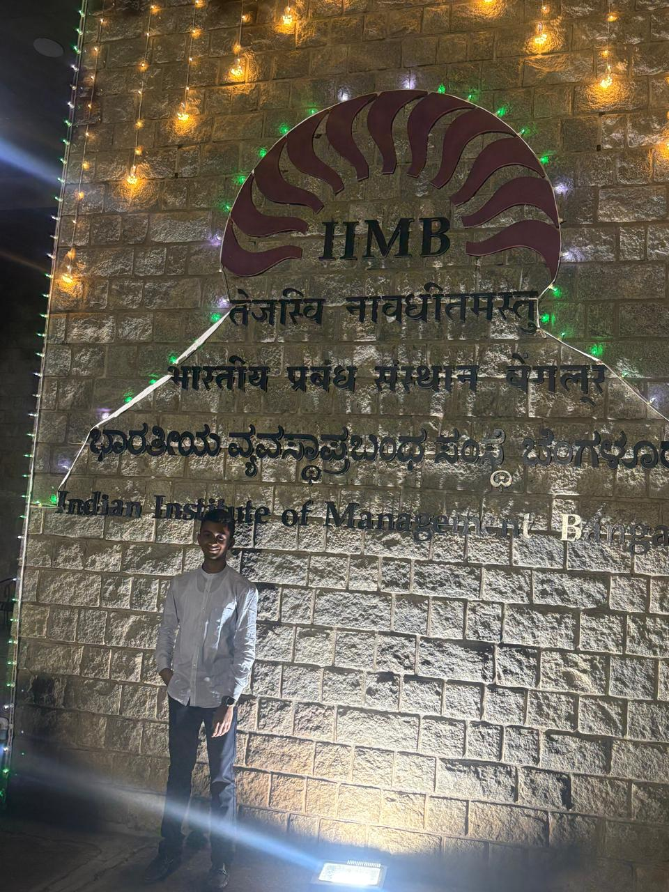
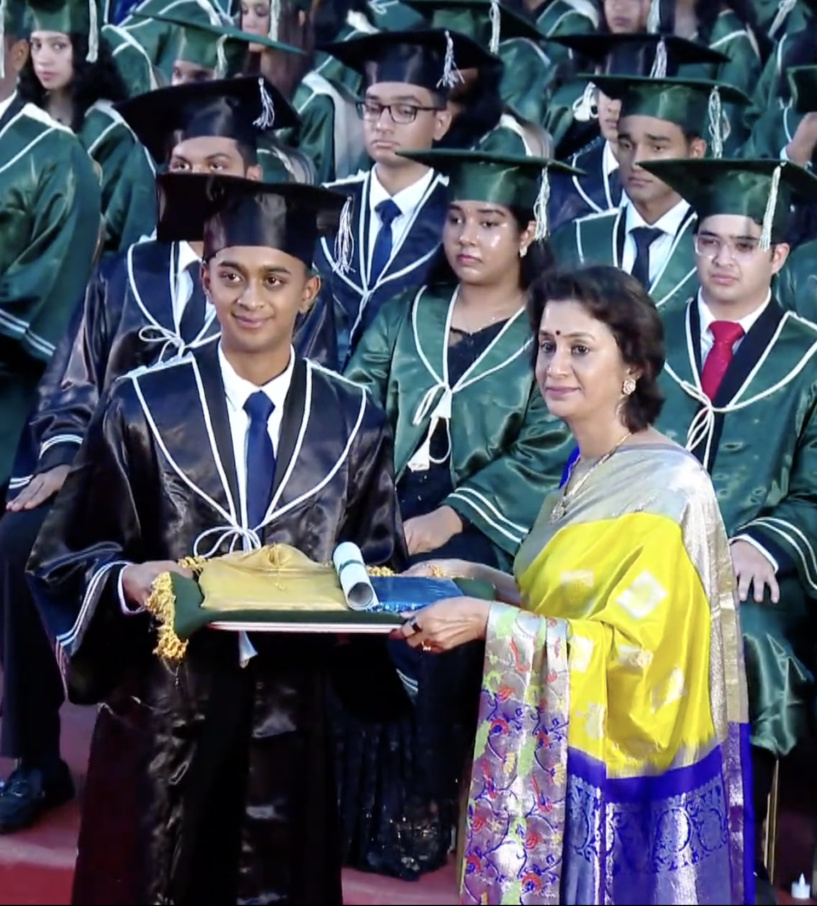

Hello!! My name is Nakshath Venkatesh, and this is my story.
It has been a journey shaped by ambition, discipline, sport, business, and a constant drive to keep building toward something bigger.
Quick Overview

Born and Raised with Purpose
From a young age, I have always been drawn to environments that demanded discipline, perseverance, and predictability. Whether it was in academics, sports, or leadership, I quickly learned that development occurs through repetition, exposure to adversity, and a dedication to improvement, even when it is slow.
I believe these crucial years have shaped who I am today. They have significantly impacted my cognitive style, my work ethic, and my approach to seeking opportunities. I have always been driven by the idea of being involved in activities in an intense, purposeful way, not just completing tasks.

The Years that Built Me
Over time, my path expanded into a combination of entrepreneurship, equestrian sport, leadership, and academics. Each one demanded a different version of me. Some required creativity and vision, others demanded patience and technical thinking, while the rest tested mental toughness.
These experiences did not stay separate. They came together and taught me how to adapt, how to communicate with different people, and how to keep moving even when the path ahead was not fully clear.
Key Achievements
Equestrian Excellence
Secured 3rd place at the National Championships, marking a major milestone in my competitive equestrian journey and reflecting years of discipline, consistency, and training.
Competed internationally at the Longines event in Doha, Qatar, gaining exposure to world-class standards and elite competition.
Shortlisted among 40 athletes being considered to represent India at the Asian Games, a recognition of long-term performance and potential in show jumping.
View Selection ListScuba Diving Experience
Earned the SSI Open Water Diver certification, building practical expertise in underwater navigation, safety procedures, and marine exploration. With multiple logged dives, I developed strong adaptability, situational awareness, and the ability to stay composed under pressure. This experience enhanced my confidence in unfamiliar environments while reinforcing discipline, precision, and effective decision-making in dynamic conditions.
This experience enhanced my confidence in unfamiliar environments while reinforcing discipline, precision, and effective decision-making in dynamic conditions.
View CertificateArtistic creativity
Received Kalai Ilamani award which is one of the highest fine arts awards given by the Government of Tamil Nadu.
I got this award for the artworks which i did. Through rigorous practice, perfection and try for consecutive 2 years, I was able to receive this award in the year 2023-24.
View AwardLeadership Roles
Served in leadership and responsibility-driven roles that developed my confidence, teamwork, and ability to manage tasks with consistency and accountability.
View ImageEducation
IIM Bangalore
Currently pursuing undergraduate studies focused on entrepreneurship, innovation, business strategy, communication, and digital business.

Schooling
Built a strong academic foundation while actively participating in leadership, entrepreneurship, equestrian sport, and co-curricular initiatives.

Experience & Internships
Ignite Youngs Minds Summer Program
Got selected to attend and participate in a highly-selective summer programme of a week organised by Cambridge Judge Business School and got received life-long connections and skills.
View CertificateInternship Experience
Mumbai FC
Gained practical exposure through an internship under Mr. Jonathon Rego from Mumbai FC, which strengthened my understanding of professional work culture, discipline, and communication.
Entrepreneurial Projects
Worked on multiple entrepreneurial ideas and branding projects, including ventures related to jewellery, equestrian infrastructure, and innovation-led business concepts.
Skills
Certifications & Awards
AGILE COIL Type Education Program 2026
Successfully completed the AGILE COIL type education program, reflecting international collaborative learning exposure.
View CertificateHigher Distinction
Recognized with Higher Distinction for excellent performance in the 2024 World Economics Cup Continental Qualifier.
View CertificateBest in Microeconomics
Received the Best – Microeconomics award for outstanding knowledge and performance in economics at the championship.
View CertificateOn-Premise Sales Job Simulation
Completed a practical sales simulation involving account data analysis and overcoming sales objectives.
View Certificate